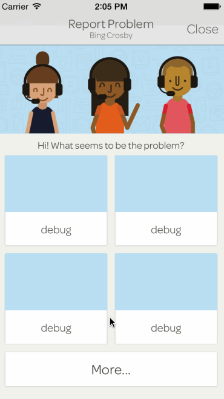
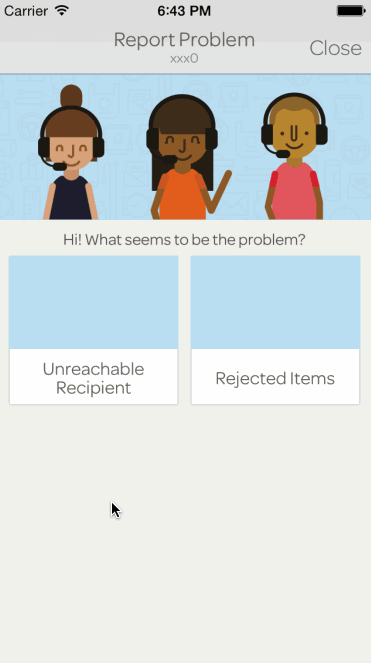

Awesome illustration by the talented Grecia Garcia
In a perfect world nothing would be wrong and everything would be made out of chocolate. Unfortunately, that's not the world we live in. As a designer, it's important to understand that and craft the best experience in a subpar situation. For our drivers, that meant building a troubleshooting system that helps them figure out any issues they might run into when delivering orders for our Sidecar Deliveries partners.
With the introduction of our Deliveries API, we needed to provide a flexible and reliable solution for our partners to help driver's troubleshoot issues that they may encounter on the road. Since we have a number of partners all with different needs, we needed to build a modular solution that could meet and support the needs of our partners operational policies.
Something that became very apparent early on when starting this project was that we were forcing the Driver to make too many decisions. From providing access to all points of communication (riders, recipients, merchants, stores, etc.) to making the figure out on the fly what they should do if something went wrong. Because we needed to ensure operational policies were followed, we needed to make it clear what a Driver should do when they encounter an issue.
The approach was to allow Drivers to contact Sidecar Support (for any emergencies) but for any other issues let the software guide them to a solution. This way, if a Driver runs into any issues they can troubleshoot the problem in a set of steps thats predefined by the merchant.
In this scenario, a Driver has arrived at a recipient's dropoff location and is attempting to deliver an order. Let's imagine that the Driver can't reach the recipient and needs to do so to deliver the order.
After opening the drawer and scrolling to the bototm of a view, the Driver taps 'Report Problem' and they are then presented with a grid of problems. The visual treatment and personality of this screen was really informed by the fact that in a problematic situation it's always good to be understanding and helpful. I tried to make it feel like rather than just using software, you were actually interacting with Sidecar Support and someone was on the other side helping you.
Once a Driver selects an issue, in this case 'Unreachable Recipient', they are presented with troubleshooting steps to follow. If they can't solve the problem after following the steps, they can cancel the order.
Here are some nice little interaction details that we used to make the app feel more responsive and human.
 Overall, I was pleased with the outcome of this project. It's some of the friendliest and most understanding interfaces I've built at Sidecar and it makes me even happier that it was for a set of unhappy edge cases.